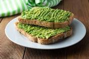

Avocado Toast

Description
When it comes to a light and nutritious breakfast
nothing can beat a well topped slice of avocado toast,here
we show you how to make your own!
Ingredients
- 4 slices whole-grain bread
- 1 avocado, halved and pitted
- 2 tablespoons chopped fresh parsley
- 1 1/2 teaspoons extra-virgin olive oil
- 1/2 lemon, juiced
- 1/2 teaspoon salt
- 1/2 teaspoon ground black pepper
- 1/2 teaspoon onion powder
- 1/2 teaspoon garlic powder
Steps:
- Toast bread in a toaster or toaster oven.
- Scoop avocado into a bowl.
Add parsley, olive oil, lemon juice, salt,
pepper, onion powder, and garlic powder;
mash together using a potato masher.
Spread avocado mixture into each piece of toast.